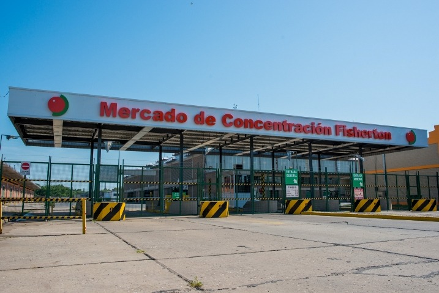

El punto mayorista donde la fruta y la verdura de todo el país se encuentra con quien abastece a la ciudad. Todos los días.

Acceso · Bv. Wilde 844Desde 1965, el Mercado de Concentración de Fisherton es el lugar donde la producción frutihortícola de todo el país —y del mundo— se encuentra con los comercios que abastecen a la ciudad.
Una sociedad de operadores bajo propiedad horizontal, ubicada junto a la Circunvalación y al aeropuerto, con acceso directo desde las rutas a Buenos Aires, Santa Fe y Córdoba.
Conocer la historiaRecorré la nave principal puesto por puesto: mirá qué comercializa cada operador, dónde está y escribile directo. Encontrá lo que buscás antes de subirte a la camioneta.
Entrar al mapaJunio enfría la región y eso cambia lo que llega a la nave. El frío frena la hoja del verano y abre la mejor temporada del año: los cítricos del norte entran en su punto justo, la fruta de pepita del Alto Valle sale de la última cosecha y las raíces se ponen más dulces. Esto es lo que está pisando fuerte estos días.
El frío del NOA concentra el azúcar: la mandarina de Tucumán y Corrientes llega dulce, jugosa y fácil de pelar. Junio es su mejor mes del año.
Cosechada en otoño en el Alto Valle de Río Negro, ahora sale de cámara en su punto justo de madurez. Firme, perfumada y de buena guarda.
La verdura de hoja prospera con el fresco: sin el estrés del calor, la acelga y la espinaca de las quintas de la zona crecen más tiernas y verdes.
Tucumán, capital mundial del limón, está en plena zafra. Llega de primera calidad, con cáscara fina y mucho jugo, por cajón para comercios.
Está siempre, pero el invierno la pone en su mejor versión: el frío le sube el dulzor y la textura. De Balcarce y la zona, por bolsa.
La papa de Balcarce no falta nunca y es la base de la mesa argentina. Blanca y negra, en bolsa de 20 kg o suelta, todo el año.
Arrancó la temporada y los puestos ya tienen la mejor producción de Concordia. Te contamos cómo elegirlos y conservarlos.
Nuevas unidades y mejoras en los accesos para agilizar la carga y descarga en las horas pico de la madrugada.
El Mercado y el Banco de Alimentos firmaron un acuerdo para donar excedentes en buen estado y reducir el desperdicio.